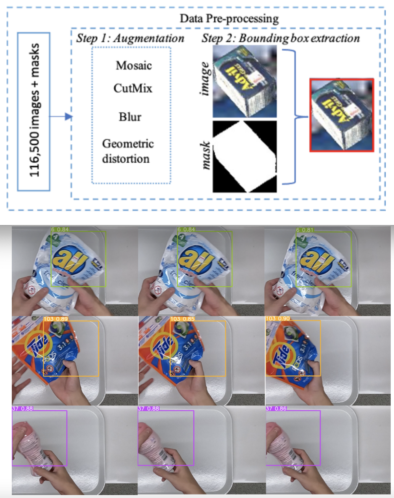
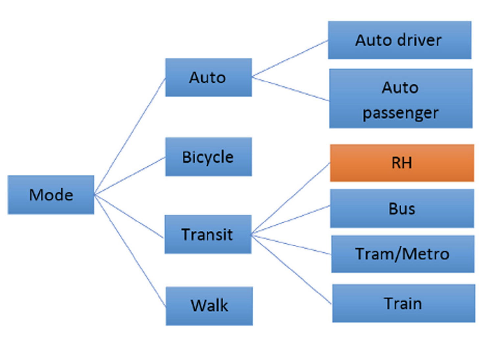
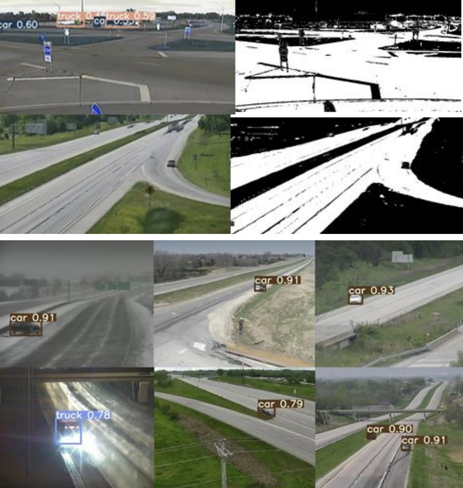
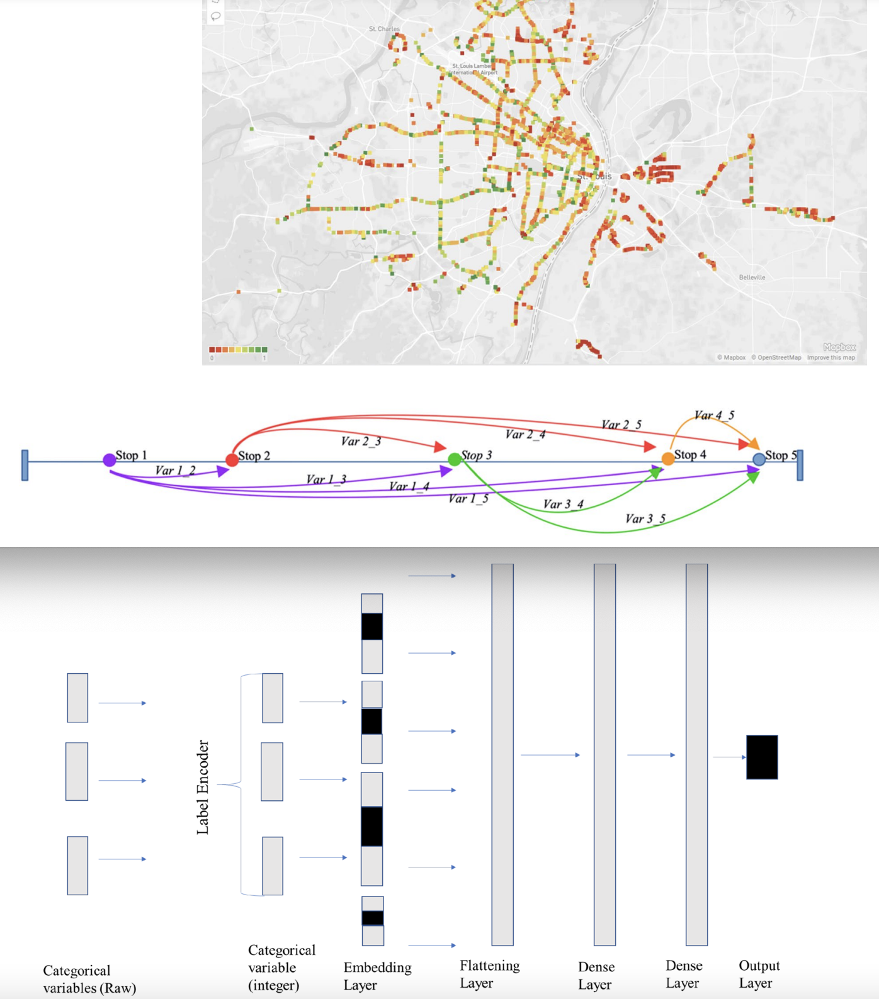
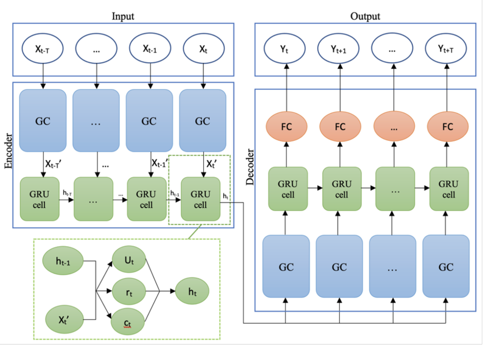

Bio
I'm broadly interested in interdisciplinary research between Computer Science and Civil Engineering. I have recently completed my PhD at the University of Missouri - Columbia, under the supervision of Carlos Sun and Yaw Adu-Gyamfi.
For my Dissertation, I built an Interactive Traffic Prediction Platform using Connected Vehicles Data that detects congestions 3 minutes prior to probe data:
[Demo link].
Prior to my PhD, I recieved my MSc at the Technical University of Munich on August 2019 under the supervision of Rolf Moeckel and Ana Tsui Moreno, and my BSc from the American University of Sharjah in August 2015 under the supervision of Sami Tabsh.
Work Experience
- [Sep 2019 - Oct 2022] Research Assistant, University of Missouri - MO, USA.
- [Sep 2016 - Aug 2019] Engineer Intern, SAP - Munich, Germany.
Honors & Awards
- 4th Place - 2022 NVIDIA AI City Challenge
- 1st Place Research Award - 2021 ITS Heartland Annual Meeting
- 5th Place - 2021 NVIDIA AI City Challenge
- 2021 CEE Outstanding PhD Student Award
- Radio Interview - St. Louis Public Radio
- 1st Place Research Award - 2020 TEAM StL Transportation Fair
- 2020 CEE Doctoral Fellowship
Publications

Accelerating Statewide Connected Vehicles Big (Sensor Fusion) Data ETL Pipelines on GPUs
Transportation Research Board 2023


Exploring Preferences for Transportation Modes in the City of Munich after the Recent Incorporation of Ride-Hailing Companies
Transportation Research Record 2021

A Vision-based System for Traffic Anomaly Detection using Deep Learning
and Decision Trees
CVPR 2021

